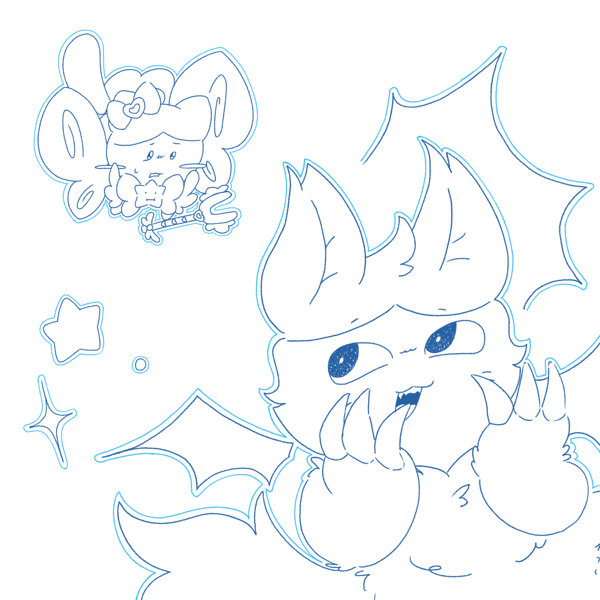

My portfolio goes through my journey in learning about how to code and how I have managed to grow my coding skills throughout the year. At first, I had no knowledge of how to code and I had little to no coding experience. However, over time, I have learned to create things such as games, apps, and websites from everything that I have learned throughout the year in Intro to Computer Science. I have been able to express my creativity with my work through my drawing skills as an artist and I have also expressed my interests in my works such as creating a quiz based on the show "Chiikawa" and creating a game based on "Undertale" as well as coding an image and website about the planets in our solar system.

One of my drawings